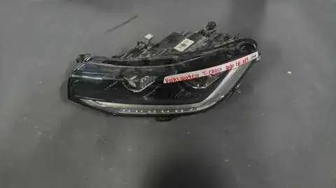
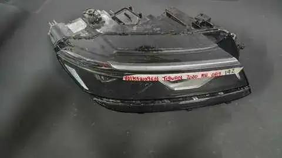
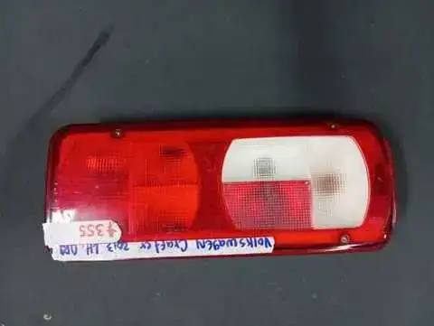
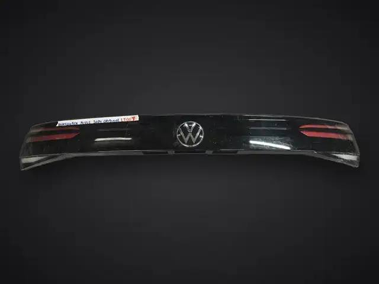

Piezas de carrocería para Volkswagen en Panamá
31 piezas disponibles hoy, cada una con su foto y su código: faros y lámparas delanteras (7), lámparas traseras (4), parrillas (4), cubrepolvos (2).
- Garantía de 3 días
- Foto real de cada pieza
- Efectivo, Yappy o ACH
- Lunes a sábado, 8:00 a. m. a 5:00 p. m.
Por modelo
Faros y lámparas delanteras para Volkswagen 7

179T-Cross2020 · lado izquierdo · original 180Gol2017 · lado izquierdo · original
180Gol2017 · lado izquierdo · original 181T-Cross2020 · lado derecho · original
181T-Cross2020 · lado derecho · original 182Saveiro2013 · lado izquierdo · original
182Saveiro2013 · lado izquierdo · original 183Gol2017 · lado izquierdo · original
183Gol2017 · lado izquierdo · original 184T-Cross2020 · lado izquierdo · original
184T-Cross2020 · lado izquierdo · original
192Tiguan2020 · lado derecho · originalLámparas traseras para Volkswagen 4
 352Touareg2024 · lado derecho · original
352Touareg2024 · lado derecho · original 353Crafter2013 · lado izquierdo · original
353Crafter2013 · lado izquierdo · original
355Crafter2013 · lado izquierdo · original
LT007Nivus2024 · originalParrillas para Volkswagen 4
 627Tiguan2022-2024 · original nuevo
627Tiguan2022-2024 · original nuevo 628Touareg Iii2019-26 · original
628Touareg Iii2019-26 · original 634T-Cross2021-22 · original
634T-Cross2021-22 · original 639Taos2021-24 · original
639Taos2021-24 · originalCubrepolvos para Volkswagen 2
 CP020Gol
CP020Gol CP045Gol
CP045GolMarcos de radiador para Volkswagen 2
 MR048Polo / Virtus
MR048Polo / VirtusRefuerzos delanteros para Volkswagen 2
Defensas delanteras para Volkswagen 1
Retrovisores para Volkswagen 1
 RV011Passat
RV011PassatDefensas traseras para Volkswagen 1
 DT215Tiguan
DT215TiguanHalógenas y faros antiniebla para Volkswagen 1
 HA001T-Cross
HA001T-CrossPuertas para Volkswagen 1
 PD030Gol
PD030GolCapós para Volkswagen 1
 TM023Gol Trend
TM023Gol TrendCovers de halógena para Volkswagen 1
Defensas traseras inferiores para Volkswagen 1
 DTI019Nivus
DTI019NivusDefensas delanteras inferiores para Volkswagen 1
Molduras traseras para Volkswagen 1
Otras marcas
ToyotaKIAHyundaiNissanSuzukiHondaGACBMWMitsubishiFordMercedes-BenzMazdaChevroletForthingJeepIsuzuBYDCheryAudiLexusMiniRAMFiatMaxusJaecooLincolnDodgeDFSKMGChanganSubaruPorscheDongfengPeugeotLand RoverAcuraInfinitiHavalOmodaDaewooGeelyGwmVolvoJMCUniversalHinoJACGMCOpelCadillacScionRenaultKaiyiDaihatsuKarryInternationalJaguarFaw